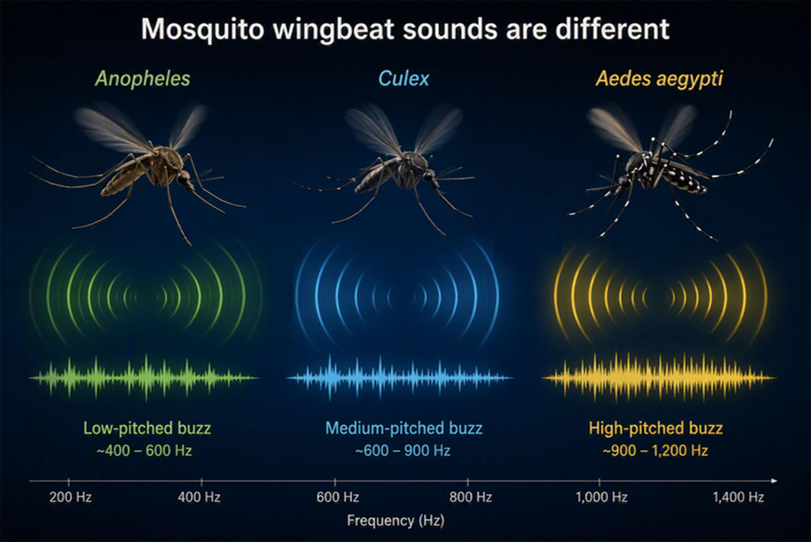
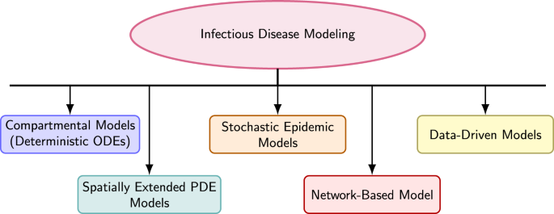

My research focuses on AI for Global Health, integrating artificial intelligence, statistical inference, and uncertainty quantification to understand infectious disease dynamics.
Trustworthy AI for Mosquito Bioacoustics
Robust acoustic classification and automated mosquito surveillance across diverse environments.
Statistical Learning and Ecological Inference
Uncertainty-aware inference of mosquito occurrence, abundance, and activity from acoustic observations.
Scientific Machine Learning and Computational Modelling
Integrating machine learning and mechanistic models for infectious disease dynamics.
 |
AI-Enabled Mosquito Surveillance and Ecological Inference Developing AI-enabled bioacoustic approaches to connect mosquito acoustic observations with behavioural activity, ecological indicators, and potential applications in public health surveillance. Bioacoustics · Ecological Monitoring · Global Health |
 |
Scientific Machine Learning for Infectious Disease Dynamics Exploring hybrid approaches that integrate neural networks, differential equations, and statistical inference to model nonlinear disease transmission dynamics and estimate time-varying parameters. Neural Operators · Dynamical Systems · Scientific Machine Learning |
Status: In development
Developing standardized mosquito bioacoustic datasets integrating acoustic recordings, environmental conditions, and biological metadata to support AI-based species classification, cross-domain generalization, and ecological inference.
Data availability: Not yet publicly released.
Public Datasets
I maintain an available mosquito acoustic datasets, including Wingbeats, HumBugDB, MosquitoSong+, and BioDCASE CD-MSC, to support reproducible research.
GitHub: Mosquito Bioacoustic Datasets
Mosquito Acoustic Classifier — In Development
Interactive mosquito species classification with audio visualization and model confidence.
Infectious Disease Dynamics Simulator — Planned
Interactive exploration of epidemic dynamics using mechanistic and data-driven models.